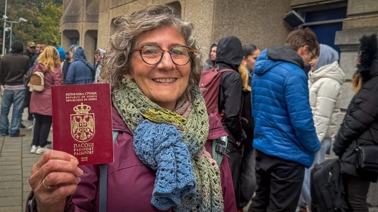
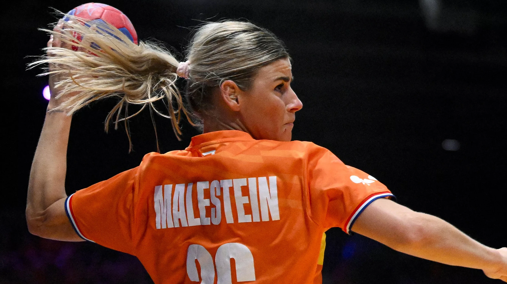
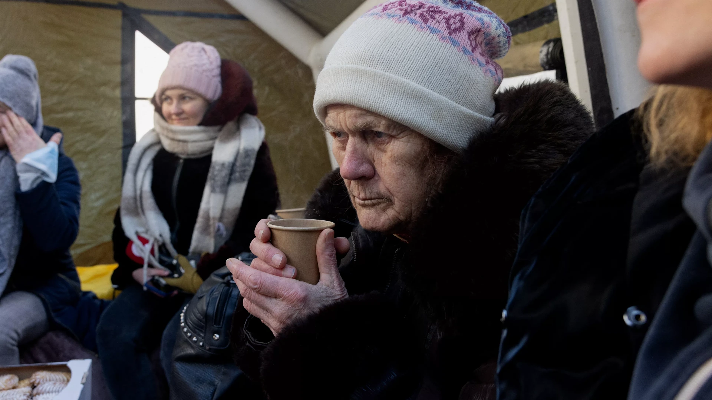
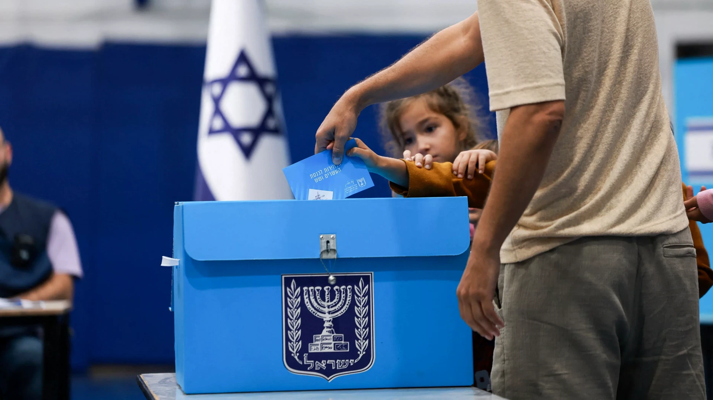
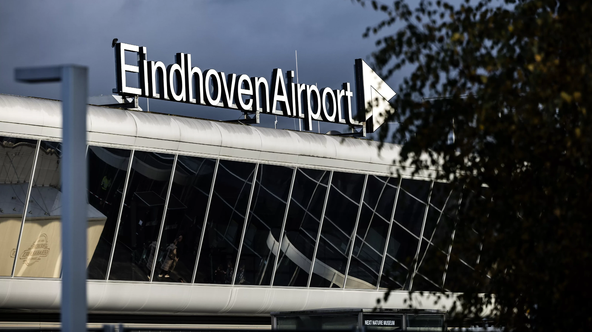

Veel stemmers in lange rij bij Servische ambassade

Nederlandse handbalsters pakken een belangrijk gelijkspel
Uitgelicht
Bekijk alles →
Russische aanvallen op energiesector Oekraïne zijn oorlogsmisdaad, stelt VN-rapport
"Burgers ontwikkelden gezondheidsproblemen vanwege de blootstelling aan de kou", zegt Møse in een toelichting. "Kou, angst en de constante stress om te overleven hadden een grote impact op burgers van alle leeftijden

Israël naar de stembus: blijft Netanyahu aan de macht?
Hoewel Israëliërs bij de verkiezing niet stemmen op personen, maar op partijen, wordt de verkiezing ook gezien als een referendum over Benjamin Netanyahu, de langstzittende premier die het land ooit gehad heeft.

Explosieven uit WO II gevonden op Eindhoven Airport
Op het vliegveld van Eindhoven zijn twee explosieven gevonden. Het gaat om explosieven die zijn overgebleven uit de Tweede Wereldoorlog.